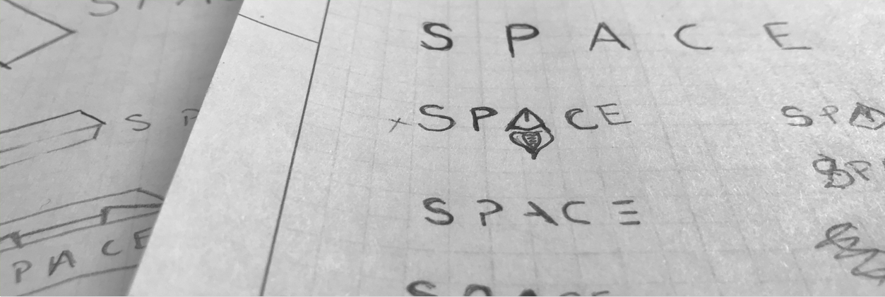
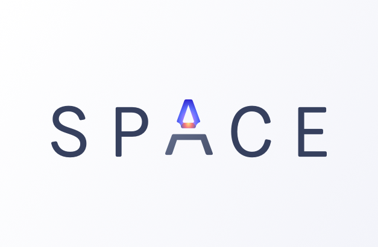
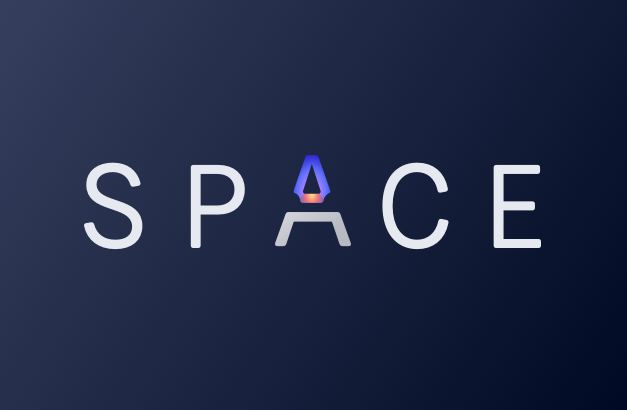
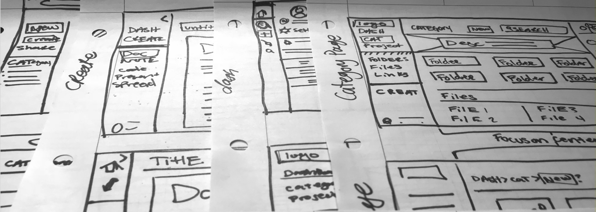
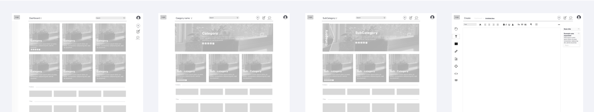
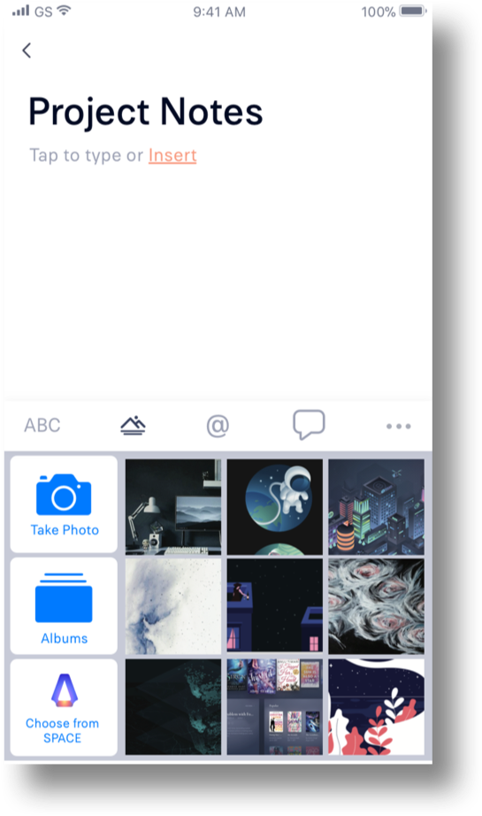
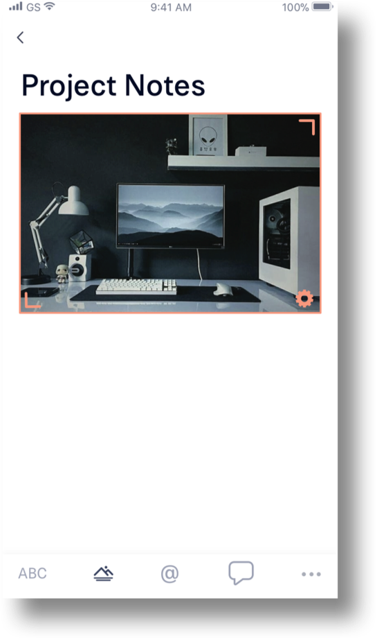
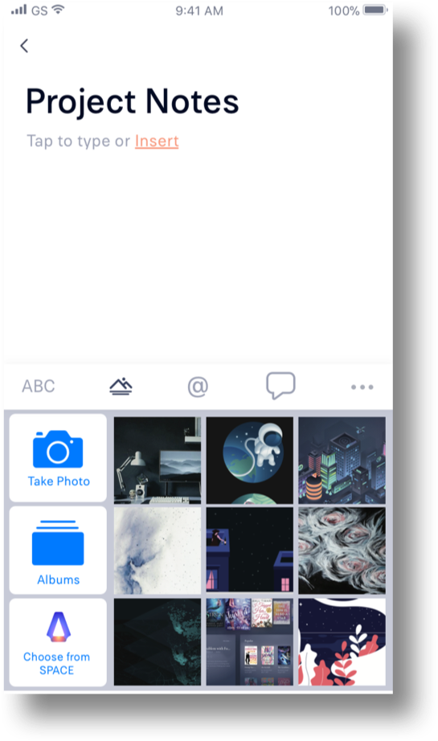
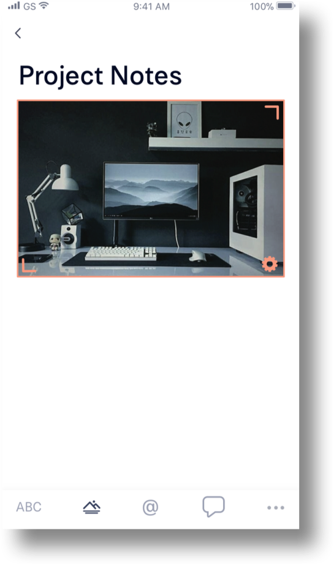

SPACE
User Experience design & Branding
Cloud storage is a tool used by almost everyone in both their personal and professional lives. The goal of Space is to provide a user experience that fits the needs of users both professionally and personally.
Challenges
- Organization can be difficult with many files
- It can be difficult to format a document or insert other file types
- It’s not always obvious who your sharing with or what access they have
- It is difficult and confusing to save links
Insights
Our users want to know who is in their files even when its just a link share; so If a person doesn’t have a profile they will have to provide a name or signup.
Our users use pinterest partially for how easy it is to save and share links.
Solutions
- Introduce categories to inspire organization.
- Have a hot key for inserting “#” and a menue.
- Make share options easier to use and more customizable.
- Save links by pasting onto Space page or download a browser extension.
Design Role
- UX Design
- Visual Design
- Branding & Identity
Deliverables
- User Surveys
- Personas
- Competitive Analysis
- User Stories & Flows
- Paper Prototype
- Wireframes
- User Testing
- Visual Design
Tools
- Sketch
- InVision
- Photoshop
- Illustrator
- Usability Hub
Assumptions
There are generally three types of people in the world when it comes to file storage:
- the people that like to store everything;
- the people that only keep what is essential; and
- the people in between who want to have a lot of files, but they want them organized.
I, along with most people I know, happen to be the the third type of person. We are the general consumers of the fast growing cloud storage market. Over the years, I have tried a few cloud storage apps and they all do different things really well. So when prompted to create a cloud storage app I decided to put all of those great features together and see if anyone else shares my problems and if not solve the problems they where having.
User Research
85%
of people use cloud storage apps like Google Drive, Dropbox, Box, Pinterest.
82%
Use cloud stoage daily. So this is a significant part of peoples lives.
40%
Use cloud storage apps for both home and work - with the last 60% being 30% professional and 30% personal.
84%
said sharing content was most important. followed by 60% crdeating documents and 57% real-time collaboration
66%
said that knowing who you are sharing with and who has access to a file is very important
66%
Said that creating new content and inserting contant into docs like code is very important
User Personas
Amelia
A 25 Y/O stay at home mom from California
Goals
I want to be able to save links to for project ideas, categorize the links and files I save. Then be able to send them to my friends and family.
“I love to do DIY projects and share them with people. It’s also great way to spend time with the family.”
Frustrations
I spend half of my dat trying to find all of the files that go together and then I have to use numerious programs to save, edit and then send or share my files.
Michael
A 29 yearold software engineer from Seattle
Goals
I want to be collaborate with coworkers and have an easy way to separate my work and personal files. I also need an easy way to insert code and spreadsheets into docs for review.
“I need to be able to organize ideas, shared between myself and others, and collaborate with coworkers”
Frustrations
It is hard to insert code into documents for review or discusion. My team often works together on dicuments but we all use the comany account because its difficult share and set permissions, so we never know who chnaged what.
Competitive Analysis Hilights
In order to see where Space will sit in the market, I needed to dig deeper into the world of cloud storage and oragnization apps. In my user survey, I asked which apps people use most for cloud storage and organization. Google drive, DropBox, Box, and even Pinterest was among them.
Some of their strengths were sharing and collaborating - some focus more on who was collaborating and some focus more on what they have changed. DropBox handles sharing permissions best. Google Drive marks where people are really well. Overall they provide a lot of information in its simplest form. None of these apps have an easy way of saving links.
User flows & User stories
Based on the information gathered from the surveys, and competitive analysis I created user stories to highlight the main features of the product. The user stories were then converted into User flows done in Sketch, to illustrate how the user would interact with the product and accomplish those goals.
Branding
Now I was ready to generate concepts and thumbnails based on my research. I kept myself accountable to my users as I started designing for Space with my research.
My users are mostly females (60% female, 40%male), 29 and younger that are students or work in industries of business, education, technology, marketing, or design.
They use cloud storage for a mix of professional and personal use every day primarily on their desktop/laptop computer. But occasionally on their phone too.
They want to send/share large files and folder, collaborate and create content.
Space was chosen as the name for this application because of its flexibility in how it can be interpreted. To some, it will mean the space on the page or different work spaces, or you can take it literally as the space the application is providing for you. Either way it's your space, and you can do what you want with it.
Logo Design
  color palette
Created in a way that will allow users to choose between light or dark interface. Muted grey blues to create a relaxing tone and reduce stress. The accent colors are softened but bright; they pop out when used on both light and dark backgrounds. They should be used sparingly to create a little more of a fun tone.
Fonts
Paul Grotesk is a humanist sans serif typeface designed with an upright stress, open forms, and a neutral, yet friendly appearance. It has excellent legibility characteristics in its letterforms.
Low Fidelity Wireframes
With my user stories and flows in place, I can begin sketching with paper.
 When the wireframes were done I was able to test them with a few people to collect some early feed back. Most of the omments were about how it may be confusing to add a dicument so I took this into consideration when movin into the High fedelity wireframes.
A&B Testing
0%
of users liked this screen.
100%
of users liked this screen over the other because it is more fun, interesting, reminded them of space.
User testing
Final Product
Lets put all of that branding and user testing to work.
 



Product Features
Stay Organize
Categories will help keep everything in its place whether its for work,school, or personal use.
Save links, files and folders in categories, create files and spruce it up with an image and description.
Save Simpler
Save and preview any file type. Including weblinks, video, adobe illustrator, psd and more.
Share Faster
with anyone, or pretect what you share with a password.
Comment on docs, create tasks for projects and collaborate.
Create all
create and edit documents easily. Add spreadsheets, images, links, code, analytics, timelines and more to your docs!
All documents auto save with a timestamp at the bottom of the screen so you know its saved.


Conclusion
The cloud storage and organization industry is a fast-growing and complicated, Just like its user's needs.
There is already a lot of excellent cloud storage companies out there, so initially, I was doubtful, especially when 80% of people said that they use Google Drive because it's convenient. But to my surprise, in my last round of user testing, people loved Space. The categories were a huge hit! People liked the organization and the minimalist new doc page.
Of course, my app isn’t perfect though! It may have a convenient to-do list feature and be some organizational help, but it doesn’t have quick note taking like most cloud storage apps, and it could use some keyboard shortcuts for all of us tech nerds, I mean tech-savvy people.
Leason Learned
Oh, and I had to take out my beloved “create” button because everyone wanted to have a single “add” button. I held onto that create button all the way to the end when a final A&B test smacked me in the face and said, “NO ONE GETS THE “CREATE” BUTTON!” So I let it go. But now I know that the more testing you can do the better, and it’s okay to love an idea, but you have to be willing to let it go too.